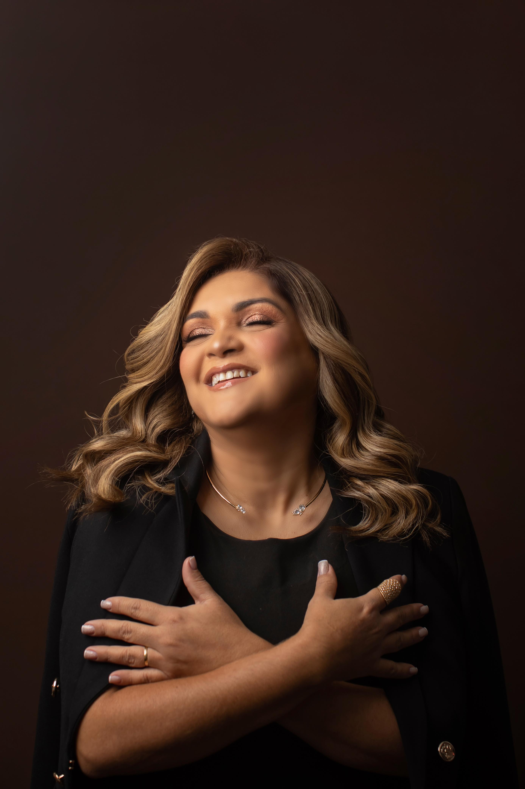

01 • InstagramVer post original ↗
Beleza com escuta, técnica e intenção
Seu cabelo, cuidado de um jeito único.
Tratamentos personalizados para realçar sua beleza, respeitar sua história e cuidar da saúde dos seus fios.
Fortaleza Ter–Sáb, a partir das 9h
anos dedicados ao cuidado capilar
5,0Nota no Google
49Avaliações no Google
+20Anos de experiência
ABTFormação profissional
Cuidado sob medida
Especialidades para cada fase do seu cabelo.
Do desejo de mudar ao momento de recuperar: cada atendimento começa entendendo você e o que seus fios precisam.
01
Loiras & mechas
Iluminação pensada para harmonizar tom, estilo e rotina de cuidados.
Conversar sobre este cuidado ↗02Alisamentos
Avaliação atenta dos fios para definir o cuidado adequado ao seu cabelo.
Conversar sobre este cuidado ↗03Tratamento & recuperação
Protocolos personalizados para tratar os fios e acompanhar sua evolução.
Conversar sobre este cuidado ↗04Cortes & iluminado
Forma, movimento e pontos de luz desenhados para valorizar sua identidade.
Conversar sobre este cuidado ↗
Fortaleza • CearáConheça Gilvania
Técnica apurada.
Olhar humano.
Mais de duas décadas transformando o cuidado com os cabelos em uma experiência de confiança.
Formada pela ABT, Gilvania Melo é cabeleireira e terapeuta capilar, especialista em mechas, alisamento, tratamento e recuperação. Seu atendimento une experiência, escuta e atenção aos detalhes — porque cada cabelo pede um caminho próprio.
“
Falar com Gilvania O primeiro passo é sempre entender o seu cabelo e o que faz sentido para você.
Resultados reais
Trabalhos de loiras e mechas.
Cores, dimensões e movimentos construídos com técnica e atenção à individualidade de cada cabelo.
Cada resultado parte de uma avaliação e respeita as características, o histórico e a rotina individual.
Resultados em movimento
Veja detalhes dos trabalhos reais.
Vídeos publicados no Instagram de Gilvania Melo. Toque em qualquer publicação para assistir também no post original.
Conte o que você busca
Chame no WhatsApp e compartilhe seu momento, sua rotina e o cuidado que deseja.
Faça sua avaliação
Gilvania observa as necessidades do cabelo e orienta o caminho mais adequado.
Viva o seu cuidado
O serviço é realizado com atenção técnica, escuta e acompanhamento próximo.
Onde encontrar
Seu cuidado capilar em Fortaleza.
R. Chico Lemos, 499Cidade dos Funcionários
Fortaleza – CE, 60822-785
GM
Ver localização no mapa ↗Gilvania Melo
Cidade dos Funcionários
Vamos conversar?